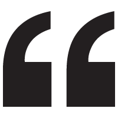

It’s not what you're like, it’s what you like.”
Rob Gordon, High Fidelity
– 5 –
It's not what you're like, it's what you like” is the memorable quote and underlying them from the 2003 movie, High Fidelity. Its wary-hero, Rob Green, and his idiot-employees spend their days working in Rob's record store and debating their all-time top five albums, singles, side one-track ones.
I get it. It’s the intersecting area of pop taste and appreciation where these merry band of misfits find their community: The people that ‘who spend all their time looking for deleted Smith singles and original, not rereleased – underlined – Frank Zappa albums.’
Great soundtrack.
– 4 –
Eight people probably saw this movie, but I love it. It’s a road movie that starts in the Northeast, a locale which I miss from time-to-time. It’s about two expecting parents taking time to explore where they wish to raise their child. Each location encounter requires the couple to address the kind of life they wish for their child. Its ending is quiet and beautiful. Directed by American Beauty director, Sam Mendes.
– 3 –
“Seven days.”
My brothers, sisters, wife, kid and I love horror films — maybe not so much the pop-out and scare you horror films, but the ones that are a slow, terrifying burn. This one probably aligns moreso with the prior than the latter. When I think about it, the part of the films I enjoy is the filmmaking with its eerie green overtone
Other noteworthy horror films: The Conjuring, 28 Days Later, The Exorcist, and It Follows. Bonus points for Cabin in the Woods..
– 2 –
I'll probably swap this out sooner-than-later, but it's still a good movie, with a simple, enjoyable soundtrack. Its writer also wrote Pieces of April and Dan in Real Life. All three movies are quiet movies which I really enjoy.
– 1 –
Is this really my favorite movie, or the movie that just made the biggest impact for the longest length of time? Forty-plus years later, it's still the best Star Wars film.